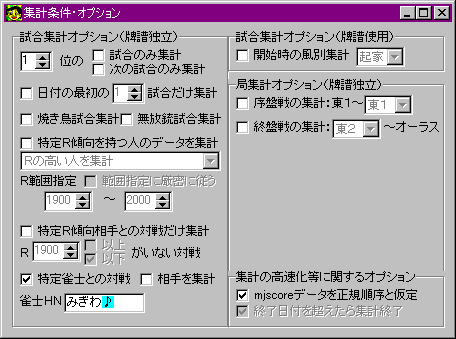

「できすぎくん」には、分析用に様々な集計オプションが用意されています。
「条件」ボタンをクリックして集計条件・オプションの選択ウインドウを開くと、これらを指定することができます。
集計にまつわる全ての点から、mjscoreファイルには一切、いかなる事情があっても改変を加えないことを強く推奨します。
まずは概論として、どういう使い方をするかを具体例と共に書きます。
より詳細な、各々のオプションの動作は、次以降の節を読んで下さい。

（現在のバージョンと若干異なる場合もあります）
これが「条件ボタン」を押した時に出てくる画面です。
集計にあたって、様々な条件付けをすることで、条件からもれる試合を集計から外し、特定のデータを得ることができます。
例えば上の画面では、「特定雀士との対戦」であること、その雀士が「みぎわ♪」さんであることを「集計のための条件」にしているところです。こうして集計すると、「みぎわ♪さんと対戦したデータ」だけを集計することができるわけです。みぎわさん相手だと、やっぱり和了率は下がるんだろうなあ・・・とか、ちょっと楽しめますね(笑)。
他のオプションも、その多くは直感的に理解できるでしょう。
例えば「焼き鳥試合集計」にチェックを入れると、「上がれなかった試合」が「集計のための条件」に入り、そうでない試合は除外されます。また「焼き鳥試合集計」にチェックを入れたまま「無放銃試合集計」にチェックを入れると、「振らず・上がらず」の試合だけの集計を取ることができます。さらにそれらのチェックを入れたまま「１位の試合のみを集計」にチェックを入れると、「振らなかったし上がれなかったが、ノーテンバップやチョンボ収入などで運良くトップになれた試合」の結果を見ることができるわけです。
また、「ドヘタが入ると勝てない！」とよく言われますが、実際に計測してみましょう。
「特定Ｒ傾向相手との対戦だけ集計」にチェックを入れ、「Ｒ1300以下（例えばです。超卓なら1930くらいでしょうか？）がいない対戦」にして集計してみましょう。これで、Ｒ1300より高いＲを持つ相手との対戦だけの集計結果が表示されます。どうですか？ 普通に（条件なしで）集計した時より、成績は良くなっていますか？ 充分に差が出ると言えるほどに成績が上がっているなら、確かに「ドヘタが入ると勝てない」と言えるかもしれません(笑)。
実際、充分な試合数でこのような実験を行って結果が出せれば、それはもう立派に「ドヘタが入ると上級者は実力を発揮しにくいことの証明」または「ドヘタに勝てないと言っているのは単なるドヘタであることの証明」になるでしょう。
とつげき東北は、「麻雀に流れはあるか？」の検証に、「〜〜位の次の試合のみ集計」を用いました。
また、「ラス親と出親、有利なのはどちら？」の検証に、「開始時の風別集計」を用いました。
その理屈やデータはとつげき東北のＨＰに論文として紹介されていますが、これは、できすぎくんの高度なオプション集計機能を利用すれば、誰でもちょっとしたアイデアで本格的な麻雀データ処理・研究・検証ができるということの一例です。
このようにして様々な「条件」をつけることで、色々と麻雀の研究を行うことができます。
試合単位でのオプションで、かつ、「mjscoreに牌譜も出力」になっている/いないに関わらず同じ結果になるオプションです。
「試合単位のオプション」とは、局単位の集計に影響を及ぼさないことを意味するのではありません。
試合全体から得られるある指標を基準に、集計方法を変更するような何らかのオプションを「試合単位のオプション」と呼びます。
特に断りがない限り、このカテゴリに含まれるオプションの効果は、全ての集計結果に影響を与えます。
試合情報に次の文字列〜〜を含む試合だけ
試合情報（※）の項目に、指定した文字列を含む試合だけを集計します。「東風戦」「東南戦」等の文字列を入れることによって、第一東風荘のみ、第二東風荘のみ・・・等の集計を行うことができます。
〜位の試合のみ集計
指定の順位であった試合だけを集計対象に含め（*「集計対象」の定義は「用語の定義」参照）、他は除外するためのオプションです。
〜位の次の試合のみ集計
指定の順位であった次の試合（*「次の試合」の定義は「用語の定義」参照）だけを集計対象に含め、他は除外するためのオプションです。
日付の最初数戦だけを集計
ある１つの日付に単数または複数の試合記録がある場合に、そのうちの最初数戦（指定可）だけを集計対象とし、他は除外します。
指定した「数戦」よりも少ない対戦数の日付のデータについては、全て集計対象に含まれます。
焼き鳥試合集計・無放銃試合集計
それぞれのオプションで「１度も上がれなかった試合」「１度も振らなかった試合」だけを集計対象に含み、他を除外することができます。
これらは複合も可能で、「１度も上がらず、振らず」の試合だけを集計対象に含み、他を除外することもできます。
特定Ｒ傾向を持つ人のデータを集計
このオプションは、現段階で唯一、指定する３つのＨＮと完全に独立な集計動作を行うオプションです。指定すると、指定ＨＮと集計結果は無関係になります。
このオプションを指定した場合、「集計される」キャラは、ＨＮで指定される３キャラの代わりに、当該試合において、以下で指定されるようなあるＲ傾向を持ったキャラになります。
「Ｒの高い人を集計」にすると、当該試合で最もＲが高かったキャラ、「Ｒの低い人を集計」にすると、当該試合で最もＲが低かったキャラ、「Ｒの中心に近い人を集計」にすると、下のＲ範囲指定の最低値〜最高値の中間のＲに最も近いキャラがそれぞれ「使用キャラ」であるかのように集計が行われます。
「範囲指定に厳密に従う」にチェックしておいた場合、そのＲ範囲内において、上記のキャラ選抜を行います。該当者がいない試合は集計されません。
また「番号○の人を集計」にチェックした場合、ある試合において牌譜上でその番号で示されているような人を集計者であるとして集計を実行します。一般には、「ＲやＨＮによらない、ランダムな集計」と見なすことができます。４人分全部を＋集計してやることによって、そのmjscoreにある「最も平均的なデータ」を算出することができます。
特定Ｒ傾向相手との対戦だけ集計
自分（集計キャラ）以外で、Ｒ〜〜以上がいない対戦、Ｒ〜〜以下がいない対戦のそれぞれを、集計から除外することができます。
例えば「Ｒ2000以上だけの対戦」を集計したければ、「Ｒ2000以下がいない対戦」にすれば良いでしょう。
特定雀士との対戦
下の空欄に特定雀士のＨＮを入れます。「相手を集計」にチェックが入っていない場合は、特定雀士と対戦した時の、自分の集計結果を集計します。「相手を集計」にチェックが入っている場合は、特定雀士と対戦した時の、その特定雀士の集計結果を集計します。
試合単位でのオプションで、かつ、「mjscoreに牌譜も出力」されたデータにのみ動作が保証されるオプションです。
特に断りがない限り、このカテゴリに含まれるオプションの効果は、全ての集計結果に影響を与えます。
開始時の風別集計
試合開始の瞬間に、集計対象のキャラが指定した風であるような試合だけを集計対象に含め、他は除外します。
牌譜が出力されていない試合は集計から除外します。
「２面以上待ち」の定義を変更する
詳細集計時には、「２面以上待ち」と「クソ待ち」とに分けてリーチデータなどが算出されます。
このオプションを指定しておくと、特定の待ちの形の場合のデータだけを抽出できます。
例えば「２面以上待ち」＝「シャンポン待ち」と定義すれば、集計結果の「２面以上待ち」の項目にはシャンポン待ちの場合だけのデータが、「クソ待ち」の項目にはその他の全ての場合のデータが出力されます。
試合単位でのオプションで、かつ、「mjscoreに牌譜も出力」されたデータにのみ動作が保証されるオプションです。
特に断りがない限り、このカテゴリに含まれるオプションの効果は、局毎のデータを出すような集計結果にのみ影響を与えます。
序盤戦の集計
東１〜指定した局までだけを集計対象にし、他は除外します。
終盤戦の集計
指定した局〜オーラスまでだけを集計対象にし、他は除外します。
mjscoreからデータを抽出する方法を選択します。
普通に東風荘をやっていて、mjscoreファイルにユーザの作為的な、または事故等による変更が加えられていない限り、このオプションを初期状態（起動時の状態）から変更する必要と意義は全くありません。
また、mjscoreファイルを単純に（データの表れる順序を変更せずに）分割し、それ以上の操作を加えていないような場合も、これらのオプションを初期状態にしたままで構いません。
集計にまつわる全ての点から、mjscoreファイルには一切、いかなる事情があっても改変を加えないことを強く推奨します。
単にmjscoreファイルをデータの順序を保ったまま２分する、という程度の変更であれば問題は生じませんが、「できすぎくん」はmjscoreファイルの容量の大小には集計時間があまり大きく左右されませんので集計上のメリットはほとんどなく、逆に集計にかかるユーザの手間が増大するだけでしょう。
また、mjscoreファイルの「ＨＮ」等を直接エディタなどで変更することも推奨しません。正しい集計のためには東風荘が出力する正確な規則に従ったデータが必要であり、半角スペースの存在の有無や、文字数の変化などが、即座に集計誤作動を生ずる可能性を生むからです。
mjscoreファイルには一切、いかなる事情があっても改変を加えないことを強く推奨しますが、もし各試合の順序だけが変化したようなmjscoreファイルを正しく集計したければ、これら「集計の高速化に関するオプション」のチェックを全て外すことで、正しい集計を行うことができます。
ただしこの場合、集計対象としたいデータが全体のデータに対して小さければ小さいほど、集計は非効率的になり集計にかかる時間が増大します。
mjscoreデータを正規順序と仮定
mjscoreに記録されている試合データが、必ず日付順に並んでいることを「できすぎくん」本体に通知するためのチェックです。
「できすぎくん」は、このオプション指定によって、集計期間内にある試合がmjscoreファイルのどの部分にあるかを動的に検索することが可能になり、mjscoreファイルが巨大であればあるほど、集計対象がファイルの後方に位置すればするほど、また集計する全データが小さければ小さいほど、集計が効率化されます。
とつ動的試合検索アルゴリズムでは、集計のための検索時間は、mjscoreファイルに含まれる全ての試合の試合数をｎとした時、Ｏ（ｎ）からＯ（log ｎ）に減少します。
例えば5000試合程度の牌譜が記録されているmjscoreにおいて、最近50試合だけを集計する場合、このオプションが指定されていると、指定されていない場合に対して集計にかかる時間は10分の1とかそういう「高い割合で」減少するでしょう。体感の集計時間は「一瞬」になると思われ、これは現在とつが知るいかなる集計ツールでも実現されていない水準です。
mjscoreの、各試合データの順序が正規(order)でさえあれば、このオプションのチェックが強く推奨されます。
一方、各試合データの順序が変更されている場合（disorder）──例えば故意にある試合数群を、mjscoreの別の部分に移動した場合はもちろん、他にも、あるmjscoreファイルが、そのmjscoreとは別の、それと同じ期間内に記録された他のmjscoreとの単純な結合（ファイルの末尾に追加するなど）によって作成された場合など──には、このオプションの指定によって一部の試合が集計から漏れる可能性が生じます。
どのような状態でどのような集計漏れが発生するかについての詳細は非公開です。
運悪くデータの位置がある種の条件を満たした場合、最悪の場合はたった１試合の「disorderな記録」が、ほとんど全ての試合を集計から漏れさせてしまう可能性もあることを指摘しておきます（例えば検索アルゴリズムが見つけた最初の試合が、集計終了日付を超えた日付の試合データを持っていたら、集計はそこで終了するでしょう）。
一般には、「disorderなデータ」が、その前後のデータとより離れた日付を持てば持つほど、集計から漏れると期待される試合数が増加します。
終了日付を超えたら集計終了
「mjscoreデータを正規順序と仮定」しない場合に、このオプションを指定するかどうかを選択できます（mjscoreデータが正規順序であると仮定した場合、終了日付を超えたら集計終了にするのは当然だからです）。
このオプションを指定すると、mjscoreファイルが巨大であればあるほど、集計対象がファイルの前方に位置すればするほど、また集計する全データが小さければ小さいほど、集計が効率化されます。
集計対象となった、ある「終了日付を超えたデータ」よりも後に、集計対象とすべきデータが存在する可能性のある改変を加えられたmjscoreファイルは、このオプションを指定すると正常に集計されない可能性があります。
もし、集計されるはずの試合数よりも集計された試合数がどうしても足りなくなった場合には、「mjscoreデータを正規順序と仮定」「終了日付を超えたら集計終了」の２つのオプションのチェックを外すことで、集計される可能性もあります（ただし大抵の場合は、ＨＮの指定ミスだとか、卓種類が集計対象卓から外れていたとか、そうしたことが原因であって、この方法では改善されないでしょう）。
正規順序のデータを持つmjscoreにおいてこれが起こった場合は、ソフトウェアの集計ルーチンにバグがあることを示します。
（v2.90とv2.91でこの現象が確認されました）
このような場合はとつにご報告下さい。
改変データがあれば集計中断
mjscoreに改変データが混じっている場合に、集計の失敗をしないために、その場で集計を中断するかどうかを決めるオプションです。チェックしておくと、改変データを見つけた時にエラーメッセージを表示して集計を中断します。チェックを外しておくと、改変データを見つけた時に、どの日付のどの時刻のデータが改変されているかを警告し、集計を続けます。
なおこのオプションは、できすぎくんが改変データの全てを必ずしも発見できることを保証しません。一部の改変データに対してだけ、このような保護機能が働きます。できすぎくんが想定していない種類の改変データに対しては、できすぎくんの動作は不定となります（不正なアドレスにアクセスする可能性まであります）。集計にまつわる全ての点から、mjscoreファイルには一切、いかなる事情があっても改変を加えないことを強く推奨します。
環境オプションの指定は、次回起動時以降も保存されます。「初期状態に戻すボタン」を押すと、すべての環境オプションの指定値は最初の状態に戻されます。
集計動作を高速化させるオプションです。
集計中の中断を許可しない
集計中に集計をキャンセルするためのボタンを表示しなくさせるオプションです。
集計キャンセルを認めるために起きるパフォーマンス低下はわずか１％程度ですので、このチェックは外しておくことを推奨します。
全ての集計条件を無効にする
このオプションにチェックした場合、集計のための条件を指定していても、常にそれを判定せず「条件なし」と見なして集計します。
条件判定のためにパフォーマンスが最大でおよそ５％（3500試合集計の場合の実測値）低下していますが、できすぎくんを起動してから一度も「条件ボタン」を押していない状態で集計した場合には、いずれにせよ条件判定を行っていませんので、このオプションを指定することによって得られるメリットは大きくはありません。通常の使用をする場合、集計間違いなどのトラブルを発生させないために、このチェックは外しておくことを推奨します。逆に、通常集計する場合には「条件ボタン」に触れないことで集計速度を最大５％程度向上させることができます。
集計動作にまつわるオプションです。
開始日付と終了日付が逆転したら自動的に修正して集計
開始日付より終了日付の方が若い日付になっていた場合、自動的に逆転して集計するためのオプションです。
この機能を使っても、使用期限を越えた日付は集計できません（例外エラーが出ます）。
できすぎくんの使用に慣れてきたら、このオプションにチェックを入れておくと便利でしょう。
正しい鍵が指定されていないＨＮが１つ以上あっても警告しない
書かれている通りの動作をするオプションです。通常の使い方をする場合、このオプションのチェックは常に外しておくことを推奨します。
その他の環境を設定するオプションです。
起動時デフォルトmjscoreを固定する
複数のmjscoreを使ってデータを取ったりする場合に便利なオプションです。
「普段使う」mjscoreに固定しておくと、データ比較などのために他のmjscoreを開いて集計しても、できすぎくんを次に起動した時には固定された「普段使う」mjscoreを集計できます。
普段は自分のmjscoreに固定しておき、他人のmjscoreをもらってデータ解析する場合には他人のmjscoreをドラッグドロップで開いて集計し、再起動して普段どおりの自分のデータを集計する、というように使うことができます。
できすぎくんが表示するウインドウの全体の色を好きな色に変更できます。
「試合情報」
正規のmjscore.txtファイルにおける、各試合の記録の最初の１行である、===== と =====の各文字列を含む行全体を指します。具体的には「===== 東風戦：仲間でワイワイ卓 71卓 開始 1999/04/02 15:51 =====」が試合情報の一例です。
「集計対象（の試合）」
以下の条件を全て満足し、集計結果に何らかの影響を与える権利を得る試合（またはそのデータ）。
０）その試合が集計対象となったmjscoreに正常に記録されている
１）その試合の日付データが、指定開始日付と集計終了日付の間の値を持つ
２）その試合に、指定したＨＮキャラが参加している
３）その試合が、全てのオプション・条件によって集計から除外されない
４）その試合は、集計ルーチンが検索アルゴリズムに従って見つけだすことが可能である
主に、オプションで操作可能なのはこのうち３）と４）の条件です（オプションによっては２を操作することもできます）。
オプションの説明で「集計対象に含める」「集計対象にする」などと表現されている場合は、基本的にこのうち、そのオプションが関わる部分での３）や４）の条件については満足するようにする、という意味であって、必ずしもその試合が実際に集計されることを意味するのではありません。
「実際に集計（される試合）」
「集計対象」の全ての条件を満たし、実際に集計結果に影響を与える権利を得る（得た）試合。
「次の試合」
仮に当該オプションが指定されていなかったと仮定した場合に、次に実際に集計されたであろう試合。
（つまり、例えば試合ＡＢＣが牌譜に並んでいたとして、他のオプションやＨＮなどの影響で、当該オプションが指定されていなかった場合に本来Ｂが集計対象から外れ「Ａ→Ｃ」のように集計されるとすれば、Ａの「次の試合」はＣになります。